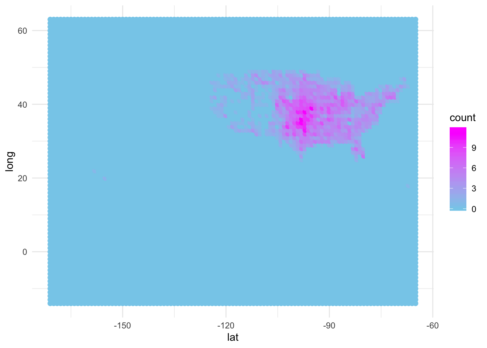

Last updated: 2019-09-20
Checks: 6 1
Knit directory: WeatherData/
This reproducible R Markdown analysis was created with workflowr (version 1.4.0). The Checks tab describes the reproducibility checks that were applied when the results were created. The Past versions tab lists the development history.
Great! Since the R Markdown file has been committed to the Git repository, you know the exact version of the code that produced these results.
The global environment had objects present when the code in the R Markdown file was run. These objects can affect the analysis in your R Markdown file in unknown ways. For reproduciblity it’s best to always run the code in an empty environment. Use wflow_publish or wflow_build to ensure that the code is always run in an empty environment.
The following objects were defined in the global environment when these results were created:
| Name | Class | Size |
|---|---|---|
| data | environment | 56 bytes |
| env | environment | 56 bytes |
The command set.seed(20190920) was run prior to running the code in the R Markdown file. Setting a seed ensures that any results that rely on randomness, e.g. subsampling or permutations, are reproducible.
Great job! Recording the operating system, R version, and package versions is critical for reproducibility.
Nice! There were no cached chunks for this analysis, so you can be confident that you successfully produced the results during this run.
Great job! Using relative paths to the files within your workflowr project makes it easier to run your code on other machines.
Great! You are using Git for version control. Tracking code development and connecting the code version to the results is critical for reproducibility. The version displayed above was the version of the Git repository at the time these results were generated.
Note that you need to be careful to ensure that all relevant files for the analysis have been committed to Git prior to generating the results (you can use wflow_publish or wflow_git_commit). workflowr only checks the R Markdown file, but you know if there are other scripts or data files that it depends on. Below is the status of the Git repository when the results were generated:
Ignored files:
Ignored: .DS_Store
Untracked files:
Untracked: data/StormEvents_details-ftp_v1.0_d1950_c20170120.csv
Untracked: data/StormEvents_details-ftp_v1.0_d1951_c20160223.csv
Untracked: data/StormEvents_details-ftp_v1.0_d1952_c20170619.csv
Untracked: data/StormEvents_details-ftp_v1.0_d1953_c20160223.csv
Untracked: data/StormEvents_details-ftp_v1.0_d1954_c20160223.csv
Untracked: data/StormEvents_details-ftp_v1.0_d1955_c20160223.csv
Untracked: data/StormEvents_details-ftp_v1.0_d1956_c20170717.csv
Untracked: data/StormEvents_details-ftp_v1.0_d1957_c20160223.csv
Untracked: data/StormEvents_details-ftp_v1.0_d1958_c20160223.csv
Untracked: data/StormEvents_details-ftp_v1.0_d1959_c20160223.csv
Untracked: data/StormEvents_details-ftp_v1.0_d1960_c20160223.csv
Untracked: data/StormEvents_details-ftp_v1.0_d1961_c20160223.csv
Untracked: data/StormEvents_details-ftp_v1.0_d1962_c20160223.csv
Untracked: data/StormEvents_details-ftp_v1.0_d1963_c20160223.csv
Untracked: data/StormEvents_details-ftp_v1.0_d1964_c20160223.csv
Untracked: data/StormEvents_details-ftp_v1.0_d1965_c20190301.csv
Untracked: data/StormEvents_details-ftp_v1.0_d1966_c20160223.csv
Untracked: data/StormEvents_details-ftp_v1.0_d1967_c20160223.csv
Untracked: data/StormEvents_details-ftp_v1.0_d1968_c20160223.csv
Untracked: data/StormEvents_details-ftp_v1.0_d1969_c20170717.csv
Untracked: data/StormEvents_details-ftp_v1.0_d1970_c20160223.csv
Untracked: data/StormEvents_details-ftp_v1.0_d1971_c20160223.csv
Untracked: data/StormEvents_details-ftp_v1.0_d1972_c20181029.csv
Untracked: data/StormEvents_details-ftp_v1.0_d1973_c20160223.csv
Untracked: data/StormEvents_details-ftp_v1.0_d1974_c20160223.csv
Untracked: data/StormEvents_details-ftp_v1.0_d1975_c20160223.csv
Untracked: data/StormEvents_details-ftp_v1.0_d1976_c20160223.csv
Untracked: data/StormEvents_details-ftp_v1.0_d1977_c20160223.csv
Untracked: data/StormEvents_details-ftp_v1.0_d1978_c20160223.csv
Untracked: data/StormEvents_details-ftp_v1.0_d1979_c20160223.csv
Untracked: data/StormEvents_details-ftp_v1.0_d1980_c20170717.csv
Untracked: data/StormEvents_details-ftp_v1.0_d1981_c20170717.csv
Untracked: data/StormEvents_details-ftp_v1.0_d1982_c20160223.csv
Untracked: data/StormEvents_details-ftp_v1.0_d1983_c20160223.csv
Untracked: data/StormEvents_details-ftp_v1.0_d1984_c20170717.csv
Untracked: data/StormEvents_details-ftp_v1.0_d1985_c20160223.csv
Untracked: data/StormEvents_details-ftp_v1.0_d1986_c20160223.csv
Untracked: data/StormEvents_details-ftp_v1.0_d1987_c20160223.csv
Untracked: data/StormEvents_details-ftp_v1.0_d1988_c20170717.csv
Untracked: data/StormEvents_details-ftp_v1.0_d1989_c20170717.csv
Untracked: data/StormEvents_details-ftp_v1.0_d1990_c20170717.csv
Untracked: data/StormEvents_details-ftp_v1.0_d1991_c20170717.csv
Untracked: data/StormEvents_details-ftp_v1.0_d1992_c20170717.csv
Untracked: data/StormEvents_details-ftp_v1.0_d1993_c20170717.csv
Untracked: data/StormEvents_details-ftp_v1.0_d1994_c20170717.csv
Untracked: data/StormEvents_details-ftp_v1.0_d1995_c20170522.csv
Untracked: data/StormEvents_details-ftp_v1.0_d1996_c20170717.csv
Untracked: data/StormEvents_details-ftp_v1.0_d1997_c20170717.csv
Untracked: data/StormEvents_details-ftp_v1.0_d1998_c20170717.csv
Untracked: data/StormEvents_details-ftp_v1.0_d1999_c20170717.csv
Untracked: data/StormEvents_details-ftp_v1.0_d2000_c20170717.csv
Untracked: data/StormEvents_details-ftp_v1.0_d2001_c20170717.csv
Untracked: data/StormEvents_details-ftp_v1.0_d2002_c20170717.csv
Untracked: data/StormEvents_details-ftp_v1.0_d2003_c20170717.csv
Untracked: data/StormEvents_details-ftp_v1.0_d2004_c20170717.csv
Untracked: data/StormEvents_details-ftp_v1.0_d2005_c20170717.csv
Untracked: data/StormEvents_details-ftp_v1.0_d2006_c20170717.csv
Untracked: data/StormEvents_details-ftp_v1.0_d2007_c20170717.csv
Untracked: data/StormEvents_details-ftp_v1.0_d2008_c20180718.csv
Untracked: data/StormEvents_details-ftp_v1.0_d2009_c20180718.csv
Untracked: data/StormEvents_details-ftp_v1.0_d2010_c20170726.csv
Untracked: data/StormEvents_details-ftp_v1.0_d2011_c20180718.csv
Untracked: data/StormEvents_details-ftp_v1.0_d2012_c20190516.csv
Untracked: data/StormEvents_details-ftp_v1.0_d2013_c20170519.csv
Untracked: data/StormEvents_details-ftp_v1.0_d2014_c20180718.csv
Untracked: data/StormEvents_details-ftp_v1.0_d2015_c20190817.csv
Untracked: data/StormEvents_details-ftp_v1.0_d2016_c20190817.csv
Untracked: data/StormEvents_details-ftp_v1.0_d2017_c20190817.csv
Untracked: data/StormEvents_details-ftp_v1.0_d2018_c20190817(1).csv
Note that any generated files, e.g. HTML, png, CSS, etc., are not included in this status report because it is ok for generated content to have uncommitted changes.
These are the previous versions of the R Markdown and HTML files. If you’ve configured a remote Git repository (see ?wflow_git_remote), click on the hyperlinks in the table below to view them.
| File | Version | Author | Date | Message |
|---|---|---|---|---|
| Rmd | 1024c96 | dtbukowski | 2019-09-20 | wflow_publish(“analysis/index.Rmd”) |
| html | 487c0b4 | dtbukowski | 2019-09-20 | Build site. |
| Rmd | 0b1b705 | dtbukowski | 2019-09-20 | Start workflowr project. |
Here is my analysis of the NOAA tornado data.
list.files(".")[1] "_workflowr.yml" "analysis" "code"
[4] "data" "docs" "output"
[7] "README.md" "WeatherData.Rproj"filesNames <- Sys.glob("data/*.csv")
filesNames[1][1] "data/StormEvents_details-ftp_v1.0_d1950_c20170120.csv"dat <- read.csv(filesNames[1],stringsAsFactors=FALSE)
head(dat) BEGIN_YEARMONTH BEGIN_DAY BEGIN_TIME END_YEARMONTH END_DAY END_TIME
1 195004 28 1445 195004 28 1445
2 195004 29 1530 195004 29 1530
3 195007 5 1800 195007 5 1800
4 195007 5 1830 195007 5 1830
5 195007 24 1440 195007 24 1440
6 195008 29 1600 195008 29 1600
EPISODE_ID EVENT_ID STATE STATE_FIPS YEAR MONTH_NAME EVENT_TYPE
1 NA 10096222 OKLAHOMA 40 1950 April Tornado
2 NA 10120412 TEXAS 48 1950 April Tornado
3 NA 10104927 PENNSYLVANIA 42 1950 July Tornado
4 NA 10104928 PENNSYLVANIA 42 1950 July Tornado
5 NA 10104929 PENNSYLVANIA 42 1950 July Tornado
6 NA 10104930 PENNSYLVANIA 42 1950 August Tornado
CZ_TYPE CZ_FIPS CZ_NAME WFO BEGIN_DATE_TIME CZ_TIMEZONE
1 C 149 WASHITA NA 28-APR-50 14:45:00 CST
2 C 93 COMANCHE NA 29-APR-50 15:30:00 CST
3 C 77 LEHIGH NA 05-JUL-50 18:00:00 CST
4 C 43 DAUPHIN NA 05-JUL-50 18:30:00 CST
5 C 39 CRAWFORD NA 24-JUL-50 14:40:00 CST
6 C 17 BUCKS NA 29-AUG-50 16:00:00 CST
END_DATE_TIME INJURIES_DIRECT INJURIES_INDIRECT DEATHS_DIRECT
1 28-APR-50 14:45:00 0 0 0
2 29-APR-50 15:30:00 0 0 0
3 05-JUL-50 18:00:00 2 0 0
4 05-JUL-50 18:30:00 0 0 0
5 24-JUL-50 14:40:00 0 0 0
6 29-AUG-50 16:00:00 0 0 0
DEATHS_INDIRECT DAMAGE_PROPERTY DAMAGE_CROPS SOURCE MAGNITUDE
1 0 250K 0 NA 0
2 0 25K 0 NA 0
3 0 25K 0 NA 0
4 0 2.5K 0 NA 0
5 0 2.5K 0 NA 0
6 0 2.5K 0 NA 0
MAGNITUDE_TYPE FLOOD_CAUSE CATEGORY TOR_F_SCALE TOR_LENGTH TOR_WIDTH
1 NA NA NA F3 3.4 400
2 NA NA NA F1 11.5 200
3 NA NA NA F2 12.9 33
4 NA NA NA F2 0.0 13
5 NA NA NA F0 0.0 33
6 NA NA NA F1 1.0 33
TOR_OTHER_WFO TOR_OTHER_CZ_STATE TOR_OTHER_CZ_FIPS TOR_OTHER_CZ_NAME
1 NA NA NA NA
2 NA NA NA NA
3 NA NA NA NA
4 NA NA NA NA
5 NA NA NA NA
6 NA NA NA NA
BEGIN_RANGE BEGIN_AZIMUTH BEGIN_LOCATION END_RANGE END_AZIMUTH
1 0 NA NA 0 NA
2 0 NA NA 0 NA
3 0 NA NA 0 NA
4 0 NA NA 0 NA
5 0 NA NA 0 NA
6 0 NA NA 0 NA
END_LOCATION BEGIN_LAT BEGIN_LON END_LAT END_LON EPISODE_NARRATIVE
1 NA 35.12 -99.20 35.17 -99.20 NA
2 NA 31.90 -98.60 31.73 -98.60 NA
3 NA 40.58 -75.70 40.65 -75.47 NA
4 NA 40.60 -76.75 NA NA NA
5 NA 41.63 -79.68 NA NA NA
6 NA 40.22 -75.00 NA NA NA
EVENT_NARRATIVE DATA_SOURCE
1 NA PUB
2 NA PUB
3 NA PUB
4 NA PUB
5 NA PUB
6 NA PUBdatT1 <- data.frame
length(filesNames)[1] 69get_storm_event_table <- function (filename,event) {
dat <- read.csv(filename,stringsAsFactors=FALSE)
dat <- transform(dat,
lat = round(BEGIN_LAT),
long = round(BEGIN_LON))
if (event == "Tornado")
dat <- subset(dat,EVENT_TYPE == event & (TOR_F_SCALE == "F5" | TOR_F_SCALE == "F4" | TOR_F_SCALE == "F3"))
else if(event != "All"){
dat <- subset(dat,EVENT_TYPE == event)
}
dat <- transform(dat,
lat = factor(lat,-14:63),
long = factor(long,-171:-65))
return(table(dat$lat,dat$long))
}
makeplot <- function(low,high,event){
low <- (low - 1949)
high <- (high - 1949)
datT <- get_storm_event_table(filesNames[low],event)
for (i in (low+1):high){
print(i)
datT = datT + get_storm_event_table(filesNames[i],event)
}
datTframe1 <- data.frame(lat = as.vector(matrix(as.numeric(colnames(datT)),78,107,byrow=TRUE)),
long = as.vector(matrix(as.numeric(rownames(datT)),78,107,byrow=FALSE)),
count = as.vector(datT^(.5)))
datTplot1 <- ggplot(datTframe1, aes(x = lat, y = long, color = count)) +
geom_path(data = map_data("state"),aes(x = long,y = lat,group = group),
color = "black") +
geom_point(size = 2) +
scale_color_gradient2(low = "darkgreen",high = "magenta",mid = "skyblue") +
theme_minimal()
return(datTplot1)
}
library(maps)
library(ggplot2)
makeplot(1950,1960,"All")[1] 2
[1] 3
[1] 4
[1] 5
[1] 6
[1] 7
[1] 8
[1] 9
[1] 10
[1] 11
sessionInfo()R version 3.6.0 (2019-04-26)
Platform: x86_64-apple-darwin15.6.0 (64-bit)
Running under: macOS Mojave 10.14.5
Matrix products: default
BLAS: /Library/Frameworks/R.framework/Versions/3.6/Resources/lib/libRblas.0.dylib
LAPACK: /Library/Frameworks/R.framework/Versions/3.6/Resources/lib/libRlapack.dylib
locale:
[1] en_US.UTF-8/en_US.UTF-8/en_US.UTF-8/C/en_US.UTF-8/en_US.UTF-8
attached base packages:
[1] stats graphics grDevices utils datasets methods base
other attached packages:
[1] ggplot2_3.2.1 maps_3.3.0
loaded via a namespace (and not attached):
[1] Rcpp_1.0.1 knitr_1.23 whisker_0.3-2 magrittr_1.5
[5] workflowr_1.4.0 munsell_0.5.0 colorspace_1.4-1 rlang_0.4.0
[9] stringr_1.4.0 highr_0.8 tools_3.6.0 grid_3.6.0
[13] gtable_0.3.0 xfun_0.7 withr_2.1.2 git2r_0.26.1
[17] htmltools_0.3.6 lazyeval_0.2.2 yaml_2.2.0 rprojroot_1.3-2
[21] digest_0.6.19 tibble_2.1.3 crayon_1.3.4 fs_1.3.1
[25] glue_1.3.1 evaluate_0.14 rmarkdown_1.13 labeling_0.3
[29] stringi_1.4.3 pillar_1.4.2 compiler_3.6.0 scales_1.0.0
[33] backports_1.1.4 pkgconfig_2.0.2